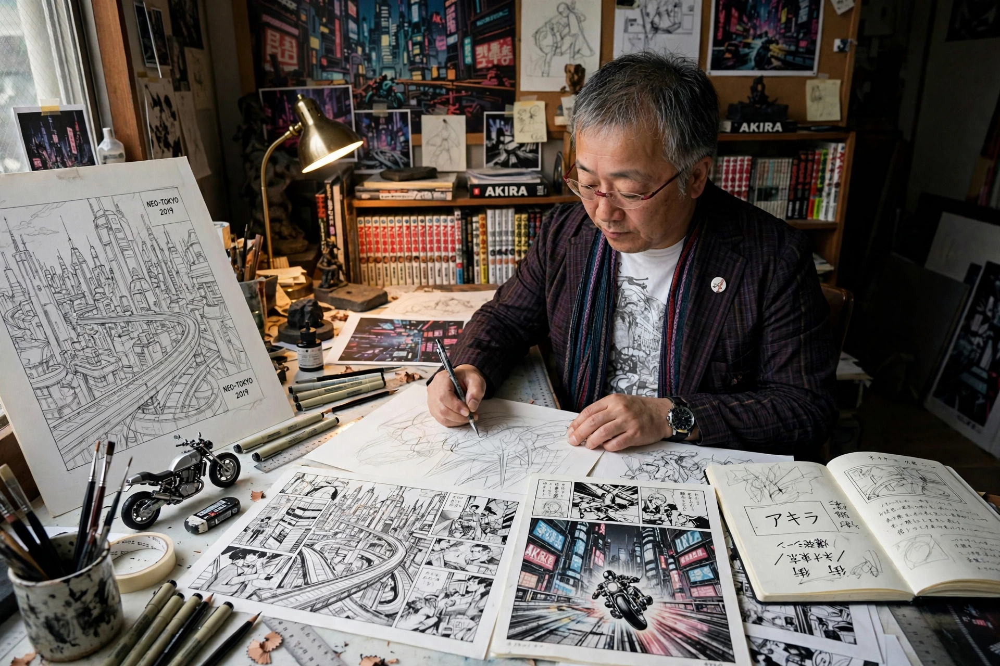

Katsuhiro Otomo

Katsuhiro Otomo (Japanese: 大友 克洋, born April 14, 1954) is a Japanese manga artist, screenwriter, and film director. He is best known as the creator of the manga Akira and its landmark 1988 animated film adaptation, works credited with introducing anime and manga to wide Western audiences and with reshaping science fiction in comics worldwide.
Early career
Born in Tome, Miyagi Prefecture, Otomo grew up fascinated by American and European comics and cinema. He moved to Tokyo and debuted as a manga artist in 1973. His early works, including Fireball (1979) and the psychological horror manga Domu (1980–81), brought him critical acclaim for cinematic composition, detailed cityscapes, and a realism unusual in manga of the period.
Akira
Serialized from 1982 to 1990, Akira is a cyberpunk epic set in a post-apocalyptic Neo-Tokyo, following biker Kaneda and his friend Tetsuo, who acquires uncontrollable psychic powers. Otomo directed the 1988 anime film adaptation himself; its unprecedented budget, fluid animation, and mature themes made it a landmark that helped ignite the global popularity of anime in the 1990s.
Later work
Otomo contributed segments to the anthologies Neo Tokyo (1987), Robot Carnival (1987), and Memories (1995), which he executive-produced and partly directed. His steampunk feature Steamboy (2004) was for years the most expensive Japanese animated film ever made. He directed the live-action film Mushishi (2006) and the short Combustible (2012), and in 2013 the anthology film Short Peace. He was inducted into the Eisner Award Hall of Fame in 2012 and received the Grand Prix at the Angoulême International Comics Festival in 2015, the first Japanese artist so honored.